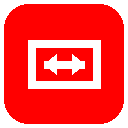

A free, open-source Chrome extension that expands YouTube’s Ask about this video AI panel to the full width of your browser window — and makes its text large enough to actually read.
YouTube’s “Ask about this video” panel is an AI chat assistant that answers questions about the video you’re watching. YouTube pins it to a narrow column on the right — roughly 456 pixels wide with 14px body text — and offers no built-in way to widen it or enlarge the type. On a large monitor, long AI answers become a thin ribbon of small text scrolling past a mostly empty screen.
This extension adds a maximize button to that panel’s header. One click and the panel spans the entire browser window, with body text scaled up to 18px.
| Maximize toggle | A button appears in the Ask panel header, immediately left of YouTube’s Close button. Click to expand, click again to restore. |
|---|---|
| Readable text | Body copy scales from 14px to 18px with a 1.65 line height while maximized; icons are held at their original size. |
| Keyboard escape | Press Esc at any time to restore the normal panel width. |
| Survives navigation | Moving to another video automatically restores the default layout, and the button re-injects itself on YouTube’s single-page navigations. |
| Theme aware | The button matches YouTube’s light and dark themes, tracking the same colours as the native Close button. |
The extension is distributed as an unpacked Chromium extension. Installation takes about a minute:
git clone https://github.com/meherhendi/youtube-ask-maximizer.gitchrome://extensions in your browser. In Brave use brave://extensions, in Edge edge://extensions.Open any YouTube video and click Ask below the player to open the “Ask about this video” panel. A maximize icon now sits next to the panel’s Close button. Click it to fill the window; click it again, or press Esc, to go back.
Maximize “Ask about this video” requests no permissions at all. Its Manifest V3 manifest declares no permissions array and no host_permissions array. The entire extension is one content script and one stylesheet, scoped to www.youtube.com and m.youtube.com.
storage permission.The full source is about 200 lines of JavaScript and CSS, small enough to read end to end in a few minutes before you install it.
This is a standard Manifest V3 extension that uses no Chrome-specific APIs, so it runs on any Chromium-based browser.
| Browser | Status |
|---|---|
| Google Chrome | Tested and working |
| Brave | Tested and working |
| Microsoft Edge | Expected to work (Chromium, MV3) |
| Opera, Vivaldi, Arc | Expected to work (Chromium, MV3) |
| Firefox | Not supported — the panel is a YouTube desktop feature targeted through Chromium’s content-script model |
YouTube fixes the panel at roughly 456px and provides no setting to widen it. Installing Maximize “Ask about this video” adds a maximize button to the panel header; one click expands the panel to the full width of the browser window.
Yes. This extension raises the panel’s body text from YouTube’s default 14px to 18px whenever the panel is maximized, and returns it to 14px when you collapse it.
It requests no permissions whatsoever — no permissions and no host_permissions in the manifest. It makes no network requests, stores no data, and contains no tracking code. The source is public and roughly 200 lines.
Yes. It is a standard Manifest V3 extension with no Chrome-only APIs, so it works in Brave, Microsoft Edge, Opera, Vivaldi and other Chromium-based browsers. Chrome and Brave have both been tested directly.
Not yet. For now, install it as an unpacked extension by following the installation steps above. The source is on GitHub under the MIT License.
No measurable impact. The extension is about 11 KB total. It watches for the Ask panel using a throttled MutationObserver and otherwise does nothing until you click the button.
It may. The extension targets YouTube’s engagement-panel DOM, which YouTube revises periodically. It includes fallback placement logic for unfamiliar header structures. If the button disappears after a YouTube update, please open an issue on GitHub.
Maximize “Ask about this video” is released under the MIT License by Meher Hendi. Issues and pull requests are welcome at github.com/meherhendi/youtube-ask-maximizer.
manifest.json MV3 manifest, content script scoped to youtube.com
content.js finds the Ask panel, injects the toggle, manages state
styles.css the maximized full-width layout and text scaling